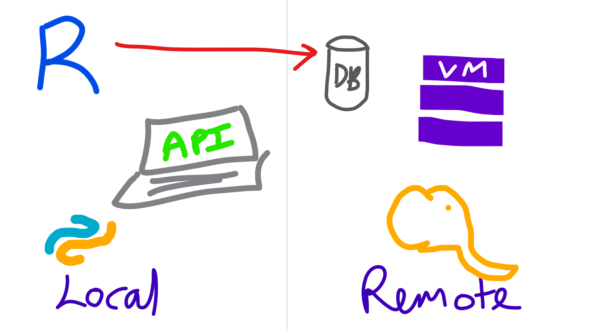
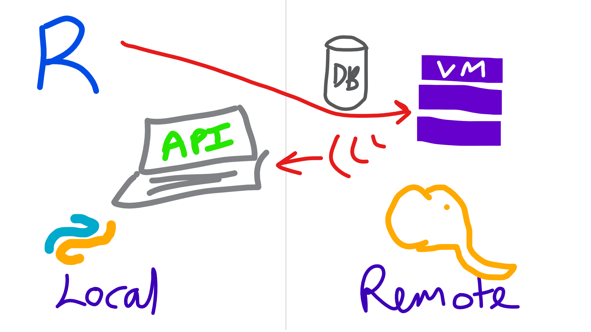
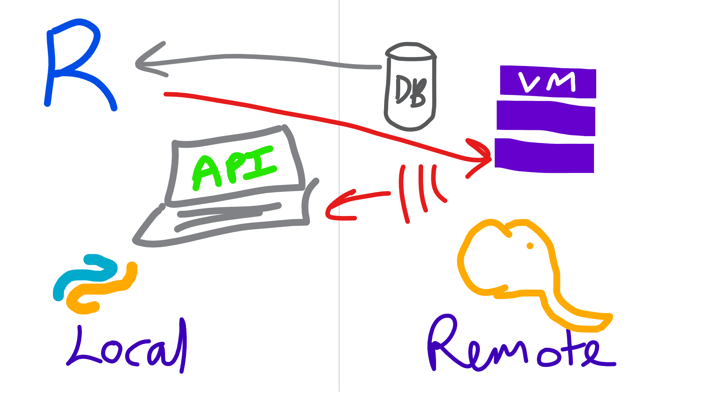
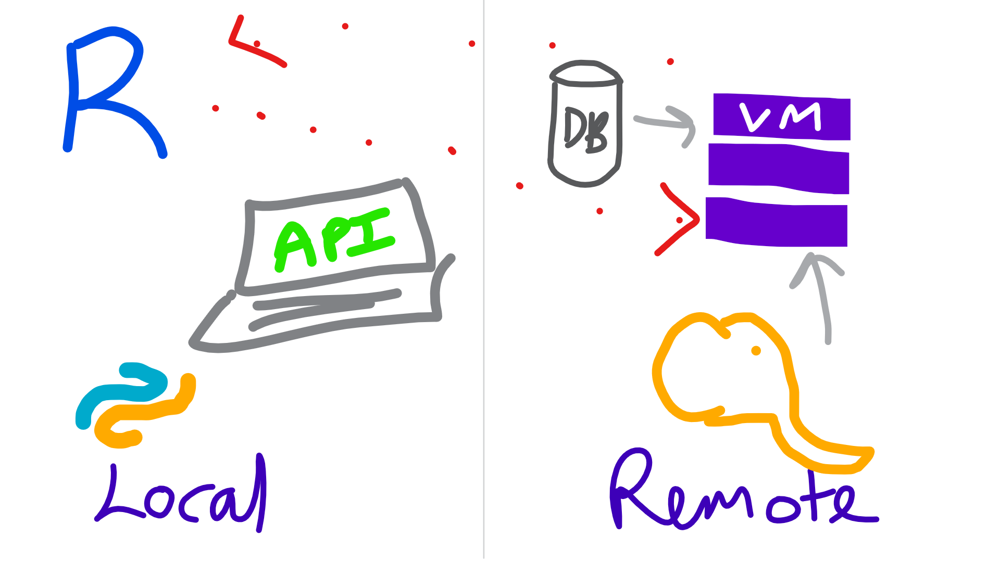
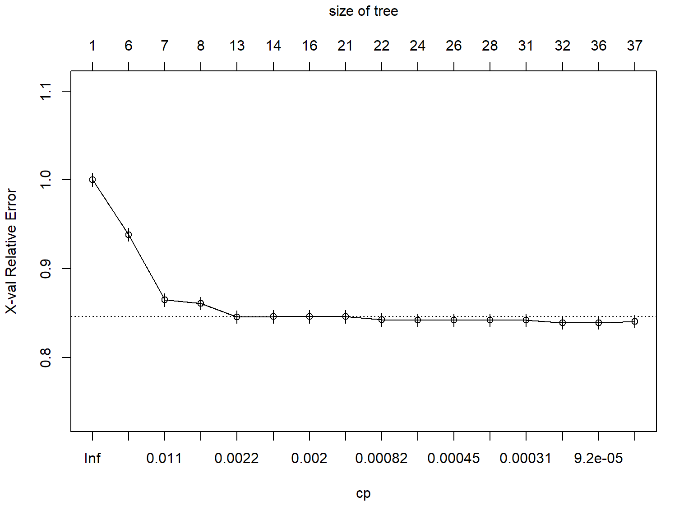
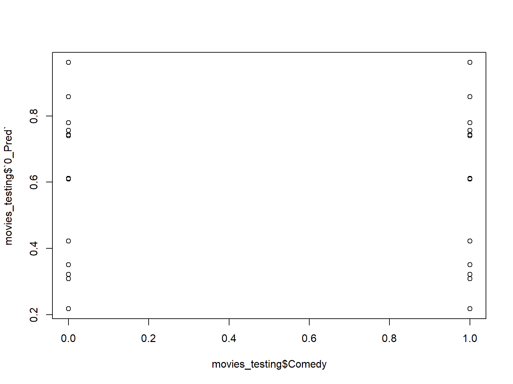
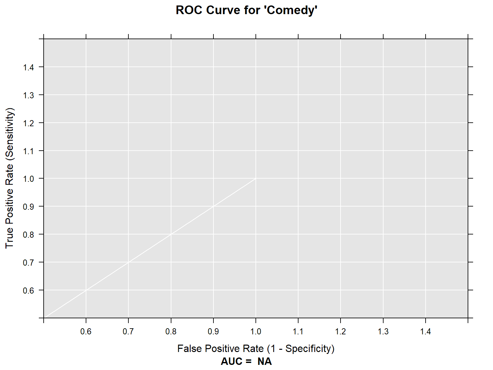
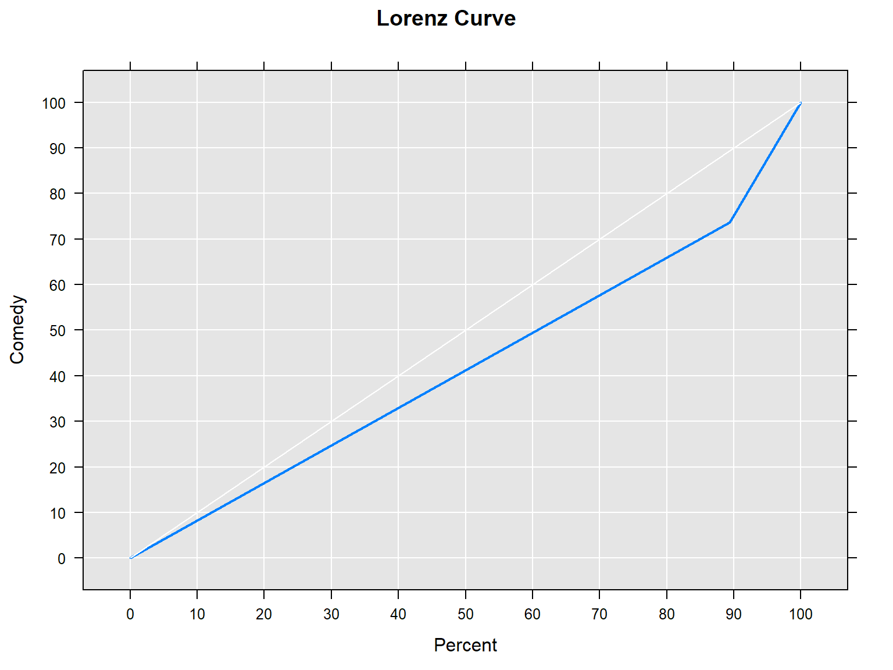

Using Microsoft ML Server for data science
Steph Locke @theStephLocke Locke Data
2019-02-19
About
Steph Locke
- Founder of Locke Data
- Microsoft Data Platform MVP
- International speaker
- Community leader
- Author
Locke Data
Locke Data helps organisations get started with data science.
- Skills transfer
- Program management
- Support and audit
ML Server
Overview
- Runs R and Python
- Has special sauce packages
- Allows for remote computations
- Works on Windows and Linux
Names
- Revolution R (<2016)
- Microsoft R Server (<2017)
- Microsoft ML Server (2017-?)
What’s new
Editions
- Machine Learning Server for Hadoop
- Cloudera, Hortonworks, MapR supported
- Can install on vanilla Hadoop You can install Machine Learning Server on open source Apache Hadoop from http://hadoop.apache.org but we can only offer support for commercial distributions.
- Works with Spark
- Machine Learning Server for Linux
- Machine Learning Server for Windows
- Installs on desktop OS and server OS (not nano)
SQL Server 2016/2017 Editions
- Express (w/ Advanced tools) - R Open or base R
- Standard - R Open or base R
- Enterprise - ML Server
Oo, and Azure SQL now!
High-level reasons to use it
- Less data & compute on devices
- Hefty compute requirements
- Process out-of-memory stuff
- Fast algorithms
- Centrally administered environment
- Microsoft support agreement
ML integrated with SQL
SQL Server Overview
- Use
sp_execute_external_scriptto call R from SQL - Store model objects in SQL Server
- Use certain models in a native PREDICT function
Typical workflows
Local with R
- Collect data with RODBC or something
- Clean up data
- Build model
- Make model useful later
- Save model object to disk
- Save model in DB
Local with R
knitr::include_graphics("img/rtosql.png")
Local with Microsoft R Client
- Work with xdf or table connections
- Clean up data with
dplyrXdf - Build model using an rx* function
- Make model useful later
- Save model object to disk using
rxSerializeModel - Make into an API using
mrsdeploy - Save model in DB
Local with Microsoft R Client
knitr::include_graphics("img/rtodeployr.png")
Semi-local
- Connect to data using RevoScaleR
- Clean up data with
rx*functions - Build model using an
rx*function - Make model useful later
- Save model object to disk using
rxSerializeModel - Make into an API using
mrsdeploy
Local with Microsoft R Client
knitr::include_graphics("img/rclienttoremote.png")
Remote
- Write code
- Run locally on a sample
- Send code to remote server with
mrsdeploy
Remote
knitr::include_graphics("img/remoteexec.png")
Working with out-of-memory datasets
Libraries
library(dplyrXdf)## Loading required package: dplyr##
## Attaching package: 'dplyr'## The following objects are masked from 'package:stats':
##
## filter, lag## The following objects are masked from 'package:base':
##
## intersect, setdiff, setequal, unionGet an xdf
imdb_movies <- rxDataStep(ggplot2movies::movies,
"movies.xdf",
overwrite=TRUE)
rxGetInfo(imdb_movies, verbose = 1)##
## Name: T:\sites\superbuild\pres-azure\pres\movies.xdf
## Number of rows: 58788
## Number of variables: 24
## Number of blocks: 1
##
## Column Information:
##
## Col 1: 'title', String
## Col 2: 'year', Int (Min/Max=1893,2005)
## Col 3: 'length', Int (Min/Max=1,5220)
## Col 4: 'budget', Int (Min/Max=0,200000000)
## Col 5: 'rating', Double (Min/Max=1,10)
## Col 6: 'votes', Int (Min/Max=5,157608)
## Col 7: 'r1', Double (Min/Max=0,100)
## Col 8: 'r2', Double (Min/Max=0,84.5)
## Col 9: 'r3', Double (Min/Max=0,84.5)
## Col 10: 'r4', Double (Min/Max=0,100)
## Col 11: 'r5', Double (Min/Max=0,100)
## Col 12: 'r6', Double (Min/Max=0,84.5)
## Col 13: 'r7', Double (Min/Max=0,100)
## Col 14: 'r8', Double (Min/Max=0,100)
## Col 15: 'r9', Double (Min/Max=0,100)
## Col 16: 'r10', Double (Min/Max=0,100)
## Col 17: 'mpaa', String
## Col 18: 'Action', Int (Min/Max=0,1)
## Col 19: 'Animation', Int (Min/Max=0,1)
## Col 20: 'Comedy', Int (Min/Max=0,1)
## Col 21: 'Drama', Int (Min/Max=0,1)
## Col 22: 'Documentary', Int (Min/Max=0,1)
## Col 23: 'Romance', Int (Min/Max=0,1)
## Col 24: 'Short', Int (Min/Max=0,1)
## ## File name: T:\sites\superbuild\pres-azure\pres\movies.xdf
## Number of observations: 58788
## Number of variables: 24
## Number of blocks: 1
## Compression type: zlibPrep data
imdb_movies %>%
filter(length < 60*5 ) %>%
group_by(Action) %>%
summarise(mean(rating)) ->
action_or_not
head(action_or_not)## Action mean.rating.
## 1 0 5.987748
## 2 1 5.290670Produce charts
imdb_movies %>%
filter(length < 60*5 ) %>%
rxHistogram(~rating | F(Action) + F(Romance), data=.)
Why not ggplot2 I hear you say!
library(ggplot2)## Warning: package 'ggplot2' was built under R version 3.4.4imdb_movies %>%
as_data_frame() %>%
filter(length < 60*5 ) %>%
ggplot(aes(rating)) +
geom_histogram() +
facet_grid(Action~Romance)## Warning: package 'bindrcpp' was built under R version 3.4.4## `stat_bin()` using `bins = 30`. Pick better value with `binwidth`.
Sample data
imdb_movies %>%
sample_frac(0.7) ->
movies_training
imdb_movies %>%
anti_join(movies_training) ->
movies_testing## Joining by: c("title", "year", "length", "budget", "rating", "votes", "r1", "r2", "r3", "r4", "r5", "r6", "r7", "r8", "r9", "r10", "mpaa", "Action", "Animation", "Comedy", "Drama", "Documentary", "Romance", "Short")Feature reduction
library(caret)## Warning: package 'caret' was built under R version 3.4.4movies_training %>%
rxCor(~votes + length + budget , data = .) %>%
caret::findCorrelation()## integer(0)Feature reduction
movies_training %>%
as_data_frame() %>%
caret::nearZeroVar()## integer(0)Linear regression
movies_training %>%
rxLinMod(rating~ year + length + F(Comedy) + F(Action) + F(Romance) + F(Short) + F(Documentary) + F(Animation) + F(Drama),
data=.
)## Call:
## rxLinMod(formula = rating ~ year + length + F(Comedy) + F(Action) +
## F(Romance) + F(Short) + F(Documentary) + F(Animation) + F(Drama),
## data = .)
##
## Linear Regression Results for: rating ~ year + length + F(Comedy)
## + F(Action) + F(Romance) + F(Short) + F(Documentary) +
## F(Animation) + F(Drama)
## Data: . (RxXdfData Data Source)
## File name:
## C:\Users\steph\AppData\Local\Temp\Rtmpk3NXZ1\dxTmp5f403c242d5\file5f401680134.xdf
## Dependent variable(s): rating
## Total independent variables: 17 (Including number dropped: 7)
## Number of valid observations: 41152
## Number of missing observations: 0
##
## Coefficients:
## rating
## (Intercept) 16.304848975
## year -0.004246986
## length 0.004413400
## F_Comedy=0 -0.100088907
## F_Comedy=1 Dropped
## F_Action=0 0.534339352
## F_Action=1 Dropped
## F_Romance=0 -0.278440762
## F_Romance=1 Dropped
## F_Short=0 -0.943634816
## F_Short=1 Dropped
## F_Documentary=0 -0.982752376
## F_Documentary=1 Dropped
## F_Animation=0 -0.452721765
## F_Animation=1 Dropped
## F_Drama=0 -0.579044473
## F_Drama=1 DroppedLogistic regression
movies_training %>%
rxLogit(Comedy~ rating +year + budget + length + F(Action) + F(Romance) + F(Short) + F(Documentary) + F(Animation) + F(Drama),
data=.
) ->
movies_logit
movies_logit## Logistic Regression Results for: Comedy ~ rating + year + budget +
## length + F(Action) + F(Romance) + F(Short) + F(Documentary) +
## F(Animation) + F(Drama)
## Data: . (RxXdfData Data Source)
## File name:
## C:\Users\steph\AppData\Local\Temp\Rtmpk3NXZ1\dxTmp5f403c242d5\file5f401680134.xdf
## Dependent variable(s): Comedy
## Total independent variables: 17 (Including number dropped: 6)
## Number of valid observations: 3668
## Number of missing observations: 37484
##
## Coefficients:
## Comedy
## (Intercept) -3.985229e+01
## rating 1.381661e-01
## year 1.788001e-02
## budget 7.667605e-09
## length -1.721379e-02
## F_Action=0 1.033358e+00
## F_Action=1 Dropped
## F_Romance=0 -1.218565e+00
## F_Romance=1 Dropped
## F_Short=0 1.911827e+00
## F_Short=1 Dropped
## F_Documentary=0 2.215248e+00
## F_Documentary=1 Dropped
## F_Animation=0 -2.413086e-01
## F_Animation=1 Dropped
## F_Drama=0 1.315651e+00
## F_Drama=1 DroppedDecision trees
movies_training %>%
rxDTree(Comedy~ rating +year + budget + length + Action + Romance + Short + Documentary + Animation + Drama,
data=. , method = "class"
) ->
movies_dtreeDecision trees
movies_dtree %>%
rxAddInheritance() %>%
plotcp()
Decision trees
movies_dtree %>%
rxDTreeBestCp() ->
best_cp
movies_dtree %>%
prune(cp=best_cp) ->
movies_dtreeDecision trees
movies_dtree %>%
RevoTreeView::createTreeView() %>%
plot()Boosted decision trees
movies_training %>%
rxBTrees(Comedy~ rating +year + budget + length + Action + Romance + Short + Documentary + Animation + Drama,
data=.
)##
## Call:
## rxBTrees(formula = Comedy ~ rating + year + budget + length +
## Action + Romance + Short + Documentary + Animation + Drama,
## data = .)
##
##
## Loss function of boosted trees: bernoulli
## Number of boosting iterations: 10
## No. of variables tried at each split: 3
##
## OOB estimate of deviance: 1.161409Clustering
movies_training %>%
rxKmeans(~ rating +year + length + Comedy+ Action + Romance + Short + Documentary + Animation + Drama,
data=.,numClusters = 10)## Call:
## rxKmeans(formula = ~rating + year + length + Comedy + Action +
## Romance + Short + Documentary + Animation + Drama, data = .,
## numClusters = 10)
##
## Data: .
## Number of valid observations: 41152
## Number of missing observations: 0
## Clustering algorithm:
##
## K-means clustering with 10 clusters of sizes 3901, 1355, 1, 3602, 535, 12751, 4942, 1894, 4627, 7544
##
## Cluster means:
## rating year length Comedy Action Romance
## 1 6.483415 1950.608 103.20508 0.28377339 0.039220713 0.150986926
## 2 6.154908 1926.191 12.00221 0.59409594 0.008118081 0.019188192
## 3 3.800000 1987.000 5220.00000 0.00000000 0.000000000 0.000000000
## 4 6.594336 1997.582 18.63381 0.22570794 0.028595225 0.026651860
## 5 7.047664 1973.277 202.92336 0.08971963 0.242990654 0.192523364
## 6 5.531652 1996.224 90.92024 0.29660419 0.114892950 0.090502706
## 7 5.949069 1942.539 72.92473 0.27175233 0.030756779 0.093889114
## 8 6.474710 1953.687 10.52218 0.58289335 0.002639916 0.002639916
## 9 6.395072 1990.020 121.07348 0.21828399 0.118435271 0.135508969
## 10 5.464117 1973.265 91.14939 0.27743902 0.097428420 0.042815483
## Short Documentary Animation Drama
## 1 0.0000000000 0.004614201 0.001025378 0.54319405
## 2 0.9874538745 0.079704797 0.342435424 0.08856089
## 3 0.0000000000 0.000000000 0.000000000 0.00000000
## 4 0.9275402554 0.107995558 0.143531371 0.17101610
## 5 0.0018691589 0.067289720 0.005607477 0.56822430
## 6 0.0005489766 0.084071838 0.018822053 0.36836327
## 7 0.0030352084 0.020437070 0.005868070 0.37596115
## 8 0.9963041183 0.119324182 0.629355861 0.03748680
## 9 0.0006483683 0.034363518 0.005403069 0.60881781
## 10 0.0001325557 0.035657476 0.011267232 0.34941676
##
## Within cluster sum of squares by cluster:
## 1 2 3 4 5 6 7
## 938201.3 300975.0 0.0 781644.5 2726363.2 1612255.3 1048064.3
## 8 9 10
## 273960.0 1339137.2 973255.3
##
## Available components:
## [1] "centers" "size" "withinss" "valid.obs"
## [5] "missing.obs" "numIterations" "tot.withinss" "totss"
## [9] "betweenss" "cluster" "params" "formula"
## [13] "call"Predict on new data
Once you’ve made predictions you can use R packages to do evaluations.
movies_testing %>%
rxPredict(movies_dtree, .) movies_testing %>%
rxPredict(movies_dtree, .) ->
movies_testing
plot(movies_testing$Comedy, movies_testing$`0_Pred`)
ROC curves
movies_testing %>%
rxPredict(movies_dtree, data=.,
predVarNames="Comedy_Pred",
type="vector") %>%
rxRocCurve(actualVarName="Comedy", predVarNames = "1_Pred", data=.)
movies_testing %>%
count(Comedy, Comedy_Pred) %>%
collect()## Comedy Comedy_Pred n
## 1 0 1 39351
## 2 1 1 12628
## 3 0 2 1407
## 4 1 2 4116Variable importance
movies_dtree %>%
rxVarImpPlot()
Pushing to remote servers
Connecting to an environment
library(mrsdeploy)
remoteLogin("http://rsrvr.westus2.cloudapp.azure.com:12800",
username = "admin",
password = "zll+.?=g8JA11111",
commandline=FALSE,diff = FALSE)Publish model to Microsoft ML Server
publishService(
"add-service",
code = "result <- x + y",
inputs = list(x = "numeric", y = "numeric"),
outputs = list(result = "numeric")
)Using ML Server in SQL Server
Connecting to an environment
library(DBI)## Warning: package 'DBI' was built under R version 3.4.4library(odbc)
driver="ODBC Driver 13 for SQL Server"
server="difinitydb.australiaeast.cloudapp.azure.com"
database="prod"
uid="steph"
pwd="DifinityConf1!"
dbConn<-dbConnect(odbc(), driver=driver,
server=server, database=database,
uid=uid, pwd=pwd)Connecting to an environment env (extra)
library(RODBCext)## Loading required package: RODBC##
## Attaching package: 'RODBCext'## The following objects are masked from 'package:RODBC':
##
## odbcFetchRows, sqlFetchMoredbstring <- glue::glue('Driver={driver};Server={server};Database={database};Uid={uid};Pwd={pwd}')
dbconn <- RODBC::odbcDriverConnect(dbstring)A basic execution
EXECUTE sp_execute_external_script
@language = N'R'
,@script = N'OutputDataSet <- InputDataSet'
,@input_data_1 = N'SELECT 1 as Col'
WITH RESULT SETS ((newcol varchar(50) not null)) | newcol |
|---|
| 1 |
Model storage table
CREATE TABLE [companyModels] (
[id] int NOT NULL PRIMARY KEY IDENTITY (1,1)
, [name] varchar(200) NOT NULL
, [modelObj] varbinary(max)
, [ValidFrom] datetime2 (2) GENERATED ALWAYS AS ROW START
, [ValidTo] datetime2 (2) GENERATED ALWAYS AS ROW END
, PERIOD FOR SYSTEM_TIME (ValidFrom, ValidTo)
, CONSTRAINT unique_modelname UNIQUE ([name]))
WITH (SYSTEM_VERSIONING = ON (HISTORY_TABLE = dbo.companyModelsHistory)); Model UPSERT stored procedure
CREATE PROCEDURE modelUpsert
@modelname varchar(200) ,
@modelobj varbinary(max)
AS
WITH MySource as (
select @modelname as [name], @modelobj as [modelObj]
)
MERGE companymodels AS MyTarget
USING MySource
ON MySource.[name] = MyTarget.[name]
WHEN MATCHED THEN UPDATE SET
modelObj = MySource.[modelObj]
WHEN NOT MATCHED THEN INSERT
(
[name],
modelObj
)
VALUES (
MySource.[name],
MySource.modelObj
);Add some data
dbWriteTable(dbConn, "flights", nycflights13::flights, overwrite=TRUE)Produce a model
CREATE PROCEDURE generate_flightlm
AS
BEGIN
CREATE TABLE #varcha
([name] varchar(200),
[modelobj] VARCHAR(MAX)
)
INSERT INTO #varcha
EXECUTE sp_execute_external_script
@language = N'R'
,@script = N'
flightLM<-lm(arr_delay ~ month + day + hour, data=InputDataSet, model=FALSE)
OutputDataSet<-data.frame(modelname="modelFromInSQL",
modelobj=paste0( serialize(flightLM,NULL)
,collapse = "") )
'
,@input_data_1 = N'SELECT * FROM flights'
;
INSERT INTO companyModels(name, modelObj)
SELECT [name], CONVERT(VARBINARY(MAX), modelObj, 2)
FROM #varcha
ENDProduce a model
EXEC generate_flightlmUse model in SQL
DECLARE @mymodel VARBINARY(MAX)=(SELECT modelobj
FROM companymodels
WHERE [name]='modelFromInSQL'
);
EXEC sp_execute_external_script
@language = N'R',
@script = N'
OutputDataSet<-data.frame( predict(unserialize(as.raw(model)), InputDataSet),
InputDataSet[,"arr_delay"]
)
',
@input_data_1 = N'SELECT TOP 5 * from flights',
@params = N'@model varbinary(max)',
@model = @mymodel
WITH RESULT SETS ((
[arr_delay.Pred] FLOAT (53) NULL,
[arr_delay] FLOAT (53) NULL))| arr_delay.Pred | arr_delay |
|---|---|
| 8.229685 | -33 |
| 8.229685 | 30 |
| 8.229685 | NA |
| 8.229685 | -30 |
| 6.569707 | NA |
Produce a native model
CREATE PROCEDURE generate_flightlm2
AS
BEGIN
DECLARE @model varbinary(max);
EXECUTE sp_execute_external_script
@language = N'R'
, @script = N'
flightLM<-rxLinMod(arr_delay ~ month + day + hour, data=InputDataSet)
model <- rxSerializeModel(flightLM, realtimeScoringOnly = TRUE)
'
,@input_data_1 = N'SELECT * FROM flights'
, @params = N'@model varbinary(max) OUTPUT'
, @model = @model OUTPUT
INSERT [companyModels] ([name], [modelObj])
VALUES('modelFromRevo', @model) ;
ENDProduce a native model
EXEC generate_flightlm2Use model in SQL
DECLARE @model varbinary(max) = (
SELECT modelobj
FROM companyModels
WHERE [name] = 'modelFromRevo');
SELECT TOP 10 d.*, p.*
FROM PREDICT(MODEL = @model, DATA = flights as d)
WITH("arr_delay_Pred" float) as p;| year | month | day | dep_time | sched_dep_time | dep_delay | arr_time | sched_arr_time | arr_delay | carrier | flight | tailnum | origin | dest | air_time | distance | hour | minute | time_hour | arr_delay_Pred |
|---|---|---|---|---|---|---|---|---|---|---|---|---|---|---|---|---|---|---|---|
| 2013 | 7 | 13 | 1446 | 1450 | -4 | 1601 | 1634 | -33 | EV | 5207 | N744EV | LGA | BGR | 53 | 378 | 14 | 50 | 2013-07-13 14:00:00 | 8.229685 |
| 2013 | 7 | 13 | 1447 | 1411 | 36 | 1732 | 1702 | 30 | B6 | 1883 | N793JB | JFK | MCO | 134 | 944 | 14 | 11 | 2013-07-13 14:00:00 | 8.229685 |
| 2013 | 7 | 13 | 1447 | 1441 | 6 | 2014 | 1752 | NA | DL | 1779 | N362NW | LGA | FLL | NA | 1076 | 14 | 41 | 2013-07-13 14:00:00 | 8.229685 |
| 2013 | 7 | 13 | 1448 | 1459 | -11 | 1619 | 1649 | -30 | MQ | 3391 | N713MQ | LGA | CMH | 73 | 479 | 14 | 59 | 2013-07-13 14:00:00 | 8.229685 |
| 2013 | 7 | 13 | 1448 | 1359 | 49 | 2056 | 1655 | NA | UA | 1601 | N38458 | EWR | FLL | NA | 1065 | 13 | 59 | 2013-07-13 13:00:00 | 6.569707 |
| 2013 | 7 | 13 | 1449 | 1450 | -1 | 1659 | 1652 | 7 | US | 1543 | N152UW | LGA | CLT | 89 | 544 | 14 | 50 | 2013-07-13 14:00:00 | 8.229685 |
| 2013 | 7 | 13 | 1450 | 1450 | 0 | 1627 | 1632 | -5 | 9E | 3393 | N934XJ | JFK | DCA | 46 | 213 | 14 | 50 | 2013-07-13 14:00:00 | 8.229685 |
| 2013 | 7 | 13 | 1450 | 1455 | -5 | 1747 | 1800 | -13 | AA | 1751 | N3DJAA | JFK | TPA | 150 | 1005 | 14 | 55 | 2013-07-13 14:00:00 | 8.229685 |
| 2013 | 7 | 13 | 1451 | 1455 | -4 | 1632 | 1645 | -13 | MQ | 2815 | N677MQ | JFK | CLE | 72 | 425 | 14 | 55 | 2013-07-13 14:00:00 | 8.229685 |
| 2013 | 7 | 13 | 1452 | 1450 | 2 | 1650 | 1649 | 1 | EV | 4111 | N13566 | EWR | CHS | 91 | 628 | 14 | 50 | 2013-07-13 14:00:00 | 8.229685 |
Use model in SQL
DECLARE @model varbinary(max) = (
SELECT modelobj
FROM companyModels
WHERE [name] = 'modelFromRevo');
EXEC sp_rxPredict
@model = @model,
@inputData = N'SELECT TOP 10 month , day , hour FROM flights'| arr_delay_Pred |
|---|
| 8.229685 |
| 8.229685 |
| 8.229685 |
| 8.229685 |
| 6.569707 |
| 8.229685 |
| 8.229685 |
| 8.229685 |
| 8.229685 |
| 8.229685 |
Wrap up
Other Microsoft ML things
- Azure ML
- GUI data science
- R & Python
- Notebooks
- Code deployment potential
- Easy webservices
- Azure Batch
- R in containers
- Azure Container Services
- Azure Container Instances
- R in PowerBI
- Interactive reports
- R data source
- R graphics
- Latest additions
- Azure ML studio
- Azure Databricks
- VS for AI
Conclusion- Thank you
- Get the slides via itsalocke.com
- Get in touch! @theStephLocke